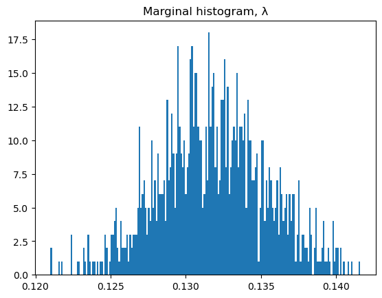
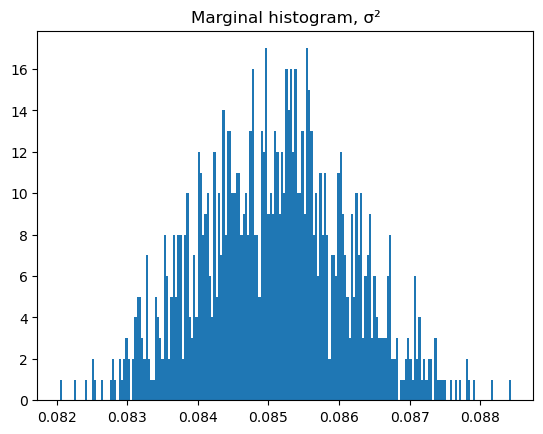
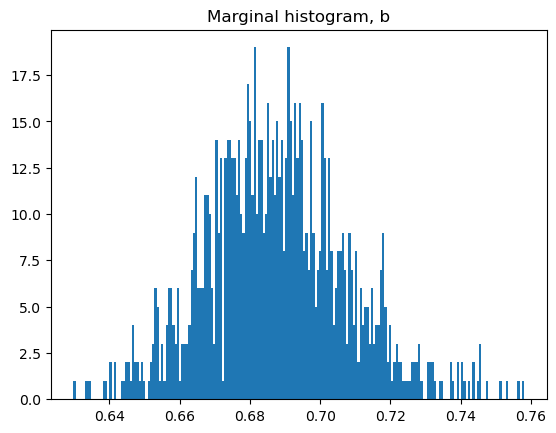
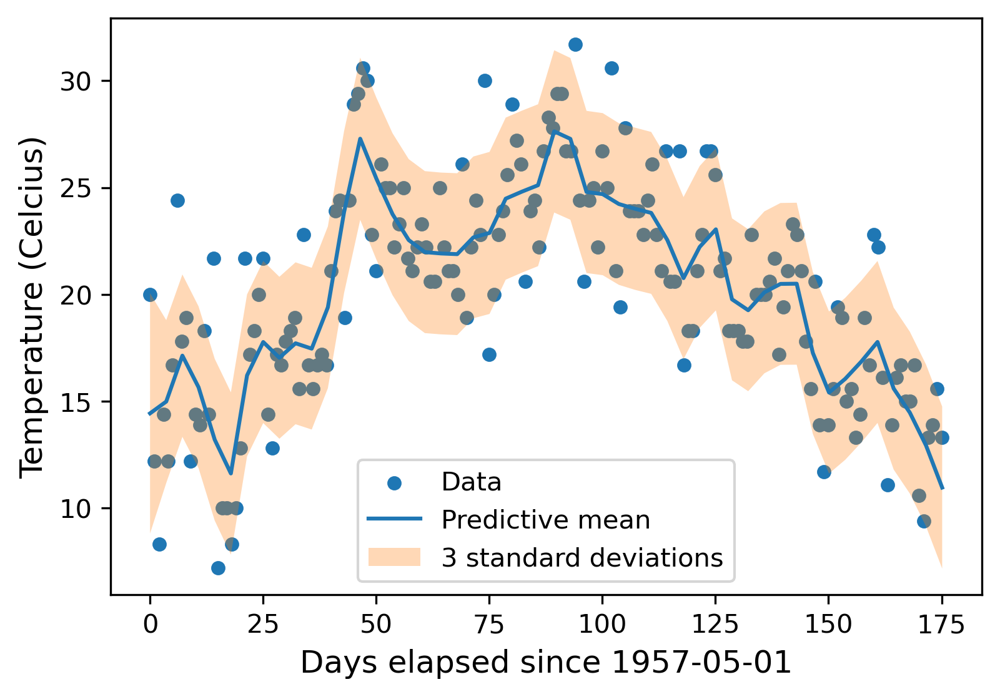

Load packages
using Pkg
Pkg.activate(".")
Pkg.Registry.add(RegistrySpec(url = "https://github.com/RoyCCWang/RWPublicJuliaRegistry")) # where MaternRegression.jl is registered.
let
pkgs = ["StaticArrays", "MaternRegression", "CSV", "DataFrames", "PythonPlot",
"FiniteDiff", "SimpleUnPack", "TransformVariables", "TransformedLogDensities",
"LogDensityProblems", "DynamicHMC"]
for pkg in pkgs
#check if package is in current environment.
if Base.find_package(pkg) === nothing
#install package.
Pkg.add(pkg)
end
end
end
import Random
Random.seed!(25)
using LinearAlgebra
using Statistics
import MaternRegression as GS; Activating project at `~/Documents/repo/MaternRegression.jl/examples`
Cloning registry from "https://github.com/RoyCCWang/RWPublicJuliaRegistry"
Registry `RWPublicJuliaRegistry` already exists in `~/.julia/registries/RWPublicJuliaRegistry`.
When we import the following, the add-on module in MaternRegression for hyperparameter inference also gets loaded.
import FiniteDiff as SFD
using SimpleUnPack
import TransformVariables as TV
import TransformedLogDensities as TD
import LogDensityProblems
import DynamicHMC as HMC;for loading the data.
import CSV
import DataFrames as DF
import Dates;Reset plot figures.
import PythonPlot as PLT
PLT.close("all")
fig_num = 1;Specify floating-point data type.
T = Float64;Load data
Get all the data from the csv into a data frame.
function get_toronto_station()
return "CA006158665"
end
function load_data(station_name)
data_path = joinpath("data", "$(station_name).csv")
return CSV.read(data_path, DF.DataFrame)
end
function reverse_standardization(yq::AbstractVector, m, s)
return collect(s*yq[n] + m for n in eachindex(yq))
end
df_all = load_data(get_toronto_station());Remove daily records that have missing maximum temperature.
df_tmax = filter(xx->!ismissing(xx.TMAX), df_all);The temperature measurements needs to be divided by 10 to get Celcius units.
N = length(df_tmax.TMAX )
y0 = collect( convert(T, x/10) for x in df_tmax.TMAX );y is the set of raining outputs.
mean_y = mean(y0)
std_y = std(y0)
y = (y0 .- mean_y) ./ std_y;Convert dates to integers, and use as training inputs.
ts_dates = df_tmax.DATE
ts0 = collect( convert(T, d |> Dates.value) for d in ts_dates );Work with elapsed days as the independent variable. ts is the set of training inputs.
ts = ts0 .- minimum(ts0)
offset_date = ts_dates[begin];Hyperparameter inference
Specify common hyperparameters for the inverse gamma prior for λ, σ², b.
α = convert(T, 1e-3)
β = convert(T, 1e-3);Number of MCMC draws. Reduce N_draws if the inference takes too long on your computer.
N_draws = 1_000;Run inference.You need to pass in the module alias HMC so that MaternRegression can check if the pre-requisite dependencies for the hyperparameter inference package extension can be loaded.
model_trait = GS.InferGain()
λ_samples, σ²_samples, b_samples, mcmc_results = GS.hp_inference(
GS.UseDynamicHMC([SFD; SimpleUnPack; TV; TD; LogDensityProblems; HMC]),
model_trait,
N_draws, α, β, ts, y,
);If you wish to save the results to disk, then uncomment the following:
##Save to disk, for later use with the QMD file.
#using Serialization
#serialize("results/mcmc", (λ_samples, σ²_samples, b_samples, mcmc_results));To load results from disk, uncomment the following:
##Load from disk, make sure there were no errors in loading.
#using Serialization
#λ_samples, σ²_samples, b_samples, mcmc_results = deserialize("results/mcmc");The marginal empirical mean and variance of the drawn samples.
λ_m, λ_v = mean(λ_samples), var(λ_samples)
σ²_m, σ²_v = mean(σ²_samples), var(σ²_samples)
b_m, b_v = mean(b_samples), var(b_samples);Check out the Hamiltonian Monte Carlo diagnostics.
HMC.Diagnostics.summarize_tree_statistics(mcmc_results.tree_statistics)Hamiltonian Monte Carlo sample of length 1000
acceptance rate mean: 0.93, 5/25/50/75/95%: 0.72 0.9 0.97 0.99 1.0
termination: divergence => 0%, max_depth => 0%, turning => 100%
depth: 0 => 0%, 1 => 2%, 2 => 40%, 3 => 47%, 4 => 11%Marginal Histograms
nbins = 200200The marginal λ samples.
PLT.figure(fig_num)
fig_num += 1
PLT.hist(λ_samples, nbins)
PLT.title("Marginal histogram, λ")
PLT.show() #Not needed if run in the Julia REPL.
PLT.gcf() #required for Literate.jl
The marginal σ² samples.
PLT.figure(fig_num)
fig_num += 1
PLT.hist(σ²_samples, nbins)
PLT.title("Marginal histogram, σ²")
PLT.show() #Not needed if run in the Julia REPL.
PLT.gcf() #required for Literate.jl
The marginal b samples.
PLT.figure(fig_num)
fig_num += 1
PLT.hist(b_samples, nbins)
PLT.title("Marginal histogram, b")
PLT.show() #Not needed if run in the Julia REPL.
PLT.gcf() #required for Literate.jl
Query inferred model
We now draw samples from an ensemble of GPR models, each GPR model corresponds to a drawn hyperparameter sample from the hyperparameter inference.
Reset seed for reproducibility.
Random.seed!(25)Random.TaskLocalRNG()Choose 5000 uniformly spaced time stamps across the in-fill interval, then pick the first window_len of them as the query positions.
Nq = 5000
window_len = 50
tqs = LinRange(ts[begin], ts[end], Nq)[1:window_len];We'll draw M number of samples per GPR model.
M = 1_000
query_samples = GS.simulate_sdegps(
λ_samples, σ²_samples, b_samples, M, ts, tqs, y,
);If you wish to save the results to disk, then uncomment the following:
##Save to disk, for later use with the QMD file.
#using Serialization
#serialize("results/mcmc_query", query_samples)To load results from disk, uncomment the following:
##Load from disk, make sure there were no errors in loading.
#using Serialization
#query_samples = deserialize("results/mcmc_query")Separate into predictive means mqs and variances vqs.
mqs, vqs = GS.compute_mean_var(query_samples);Get the preditive standard deviation.
sqs = sqrt.(vqs);prepare for display.
inds = findall(xx->xx<tqs[end], ts)
ts_display = ts[inds]
y_display = reverse_standardization(y[inds], mean_y, std_y)
mqs = reverse_standardization(mqs, mean_y, std_y)
sqs = sqs .* std_y;Set the shaded region to be 3 standard deviations from the mean.
plot_uq_amount = 3 .* sqs;Visualize.
fig_size = (6, 4) # units are in inches.
dpi = 300
PLT.figure(fig_num; figsize = fig_size, dpi = dpi)
fig_num += 1
PLT.scatter(ts_display, y_display, s = 20, label = "Data")
PLT.plot(tqs, mqs, label = "Predictive mean")
PLT.fill_between(
tqs,
mqs - plot_uq_amount,
mqs + plot_uq_amount,
alpha = 0.3,
label = "3 standard deviations"
)
PLT.xlabel("Days elapsed since $offset_date", fontsize = 12)
PLT.ylabel("Temperature (Celcius)", fontsize = 12)
PLT.legend()
PLT.show() #Not needed if run in the Julia REPL.
PLT.gcf() #required for Literate.jl
This page was generated using Literate.jl.